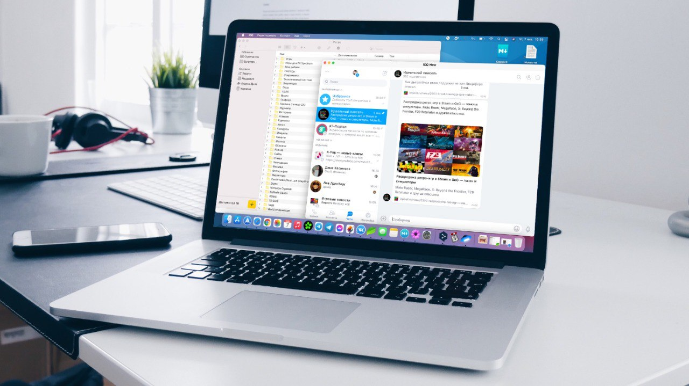

Product faster
An Enterprise API
We've built an API that allow you to scale your podcast production workflow.
Template driven Inspired by Sendgrid, Mailchimp, and Postmark, we allow you to create and apply templated content to your media.
Simple, REST A straightforward REST API that lets you create, generate, and manage your content.
Developer friendly Documented and easy to use, we make it simple to integrate with your existing workflow.
